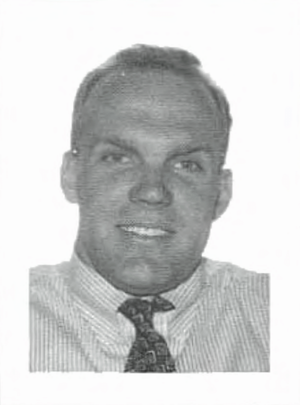

Gregory P. Bolin
1964 - June 6, 1996
Greg grew up in Fountain Valley, California, where he was a first-team all-county high school tight end. He earned an athletic scholarship to UCLA, played on Rose Bowl and Fiesta Bowl teams, and graduated in 1987 with...
Read full memorial